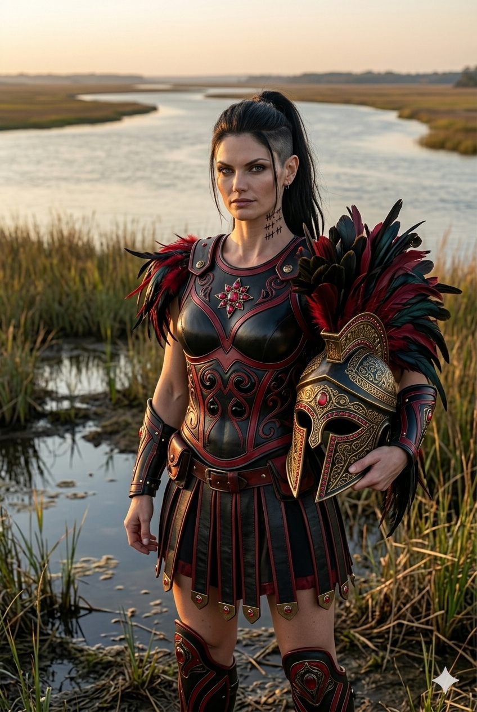

The faction's interrogation rooms are in the west wing of the Martial seat. The west wing is Merixa's.
Captives delivered to House Martial who require what the in-house language calls resolution are not delivered to the First Line. They are delivered to Merixa, in rooms she has arranged precisely to her preference, in a part of the seat where the corridors are quiet and the stone walls are thick.
Merixa's specialty is not pain — Thalyne has more talent for that, and the faction does not waste Thalyne's time on captives who can be opened by other means. Merixa's specialty is the structure of the room itself. The captive arrives with a posture and a defense. By the second day, the captive's posture has shifted in ways the captive cannot account for. By the fourth day, the defense has begun to fracture in places the captive did not know the defense was vulnerable. Merixa does not hurry. She has the rooms. She has the time.
The faction's most documented operation in this generation is the one involving Taren Holt — a Common tradesman whose work brought him into the wrong stretch of the west wing on the wrong assignment. The arrangement Merixa constructed around Taren is the textbook example of the faction's preferred method when the captive cannot be physically broken without political cost: position, debt, proximity, the slow conversion of free choice into the appearance of free choice. Merixa does not need a captive to lack options. She needs the captive to choose, repeatedly, the option Merixa has placed in front of him.
The other faction members assist when Merixa requests it. Thalyne provides the controlled physical presence that adjusts the room's pressure. Lyssera provides the watchful entertained attention that makes the captive aware of being observed. Seleva provides the occasional gravity of the matriarch entering the room, which moves the captive's understanding of the situation in ways nothing else can.
Other houses, observing from the outside, sometimes assume that Merixa is unmarried because the faction has not yet found the right marriage for her. This is incorrect. Merixa has not married because she has decided not to. The faction does not press her on the question. Seleva understands what she would lose if Merixa's attention were divided, and the loss would be considerable.
Merixa keeps her quarters small and arranged for one occupant. She does not entertain in them. The west wing's interrogation rooms, by an observation the faction does not advertise, are some of the most personally arranged rooms in the entire Martial seat.
